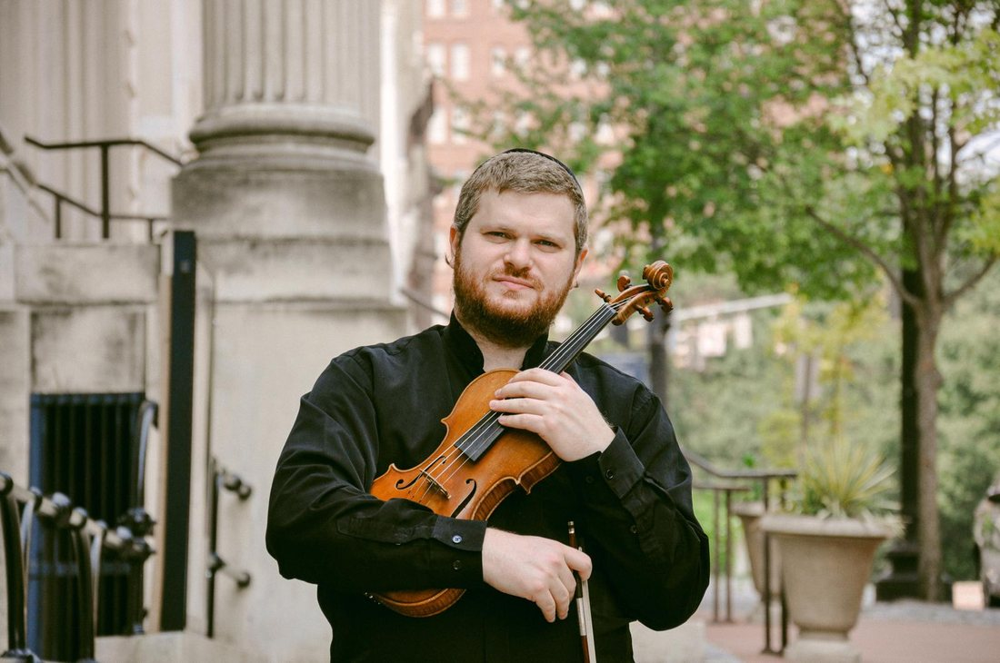

Play the violin or viola with greater ease
Your place is reserved for Monday, October 12 at .
A confirmation is on its way to your inbox, and your Zoom details will follow in your calendar invite closer to the date. If you don't see the confirmation within a few minutes, check your spam or promotions folder. Can't make it live? A replay will be sent within 24–48 hours.
Until then, try this: play a slow open string and simply notice what's working that doesn't need to be. We'll build on that together.
Maybe your bow hold tightens when a passage speeds up. Maybe your fingers feel stiff, your shoulders creep upward, or your jaw holds on without you noticing. Maybe practice leaves you more tired than it should.
And somewhere along the way, someone told you to relax.
But nobody explained what that means while you're holding a bow, stopping a string, and trying to make music at the same time.
What should stay active? What should let go? And how do you tell the difference?
I'd like to personally invite you to a free live masterclass I'm teaching on Monday, October 12 at .
From Tension to Freedom: Play the Violin or Viola with Greater Ease
If you've ever dealt with a tight bow hold, stiff fingers, raised shoulders, or fatigue while playing, you've probably been told to "just relax." It's well-meant advice, but it leaves out the most important part: what should stay active while everything else lets go.
That's what we'll explore together, with practical exercises for the bow hold, the fingers, and martelé. So bring your instrument.
It's free, it's live, and I'd love to see you there.
Warmly,Yonatan Grinberg

Playing the violin or viola requires real physical effort. The question is how much, and when.
Ease means using the right amount of effort at the right moment, and releasing it when it's no longer needed. Relaxation isn't the goal in itself. It's a tool that lets you move freely, respond to the instrument, and play what you actually hear.
This isn't a lecture. You'll work through guided exercises with the bow hold, the fingers, and simple strokes like martelé, all designed so you can try them on your own instrument in real time.
You'll leave with a clearer sense of what your playing actually requires, and a practical way to keep exploring it in your own practice.
You don't need to be advanced.
You just need to be curious about how you play.
Playing with ease doesn't mean playing without strength. It means strength you can use and release at will.
DMA, Peabody Conservatory · Baltimore
Dr. Yonatan Grinberg is a violinist, chamber musician, and educator based in Baltimore.
He holds a Doctor of Musical Arts degree from the Peabody Conservatory and has performed internationally as a soloist and chamber musician.
He has studied with some of the greatest violin masters in the world, including Vadim Gluzman, Itzhak Perlman, and Shmuel Ashkenazi.
Through his teaching and coaching programs, he helps musicians develop greater technical freedom, expressive playing, and confidence in performance.
"I believe players deserve more than 'relax.' They deserve a clear way to discover how much effort their playing needs, and how to use it on purpose."
Find Dr. Yonatan here:
Yes, completely free.
No. The exercises work at any level, as long as you're comfortable holding the instrument and bow.
Absolutely. Everything applies to both the violin and the viola.
Yes. Have it tuned and nearby, because you'll try the exercises as we go.
Live on . Your Zoom details will be included in your calendar invite closer to the date.
This masterclass focuses on how you use effort while playing. It isn't medical advice or treatment, so if you're experiencing pain, please consult a qualified health professional.
Join Dr. Yonatan Grinberg live on Monday, October 12 at .
Reserve My Free Place